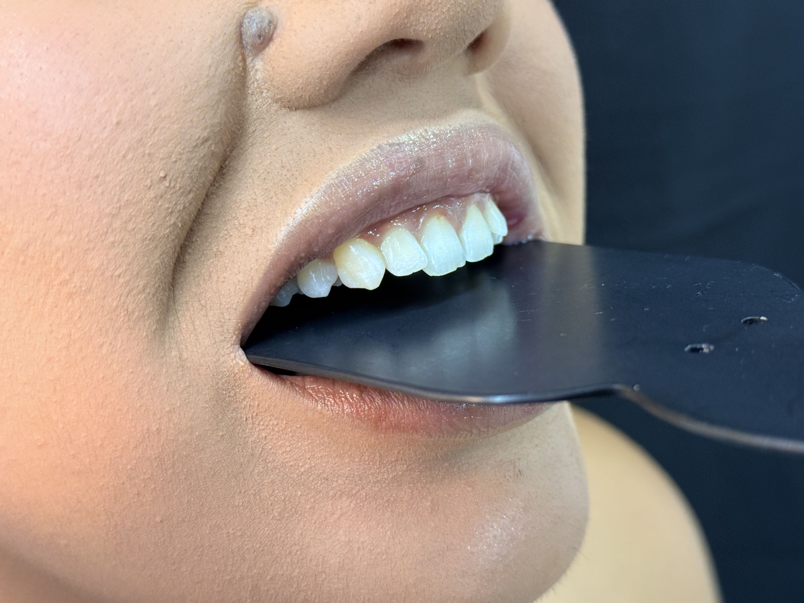
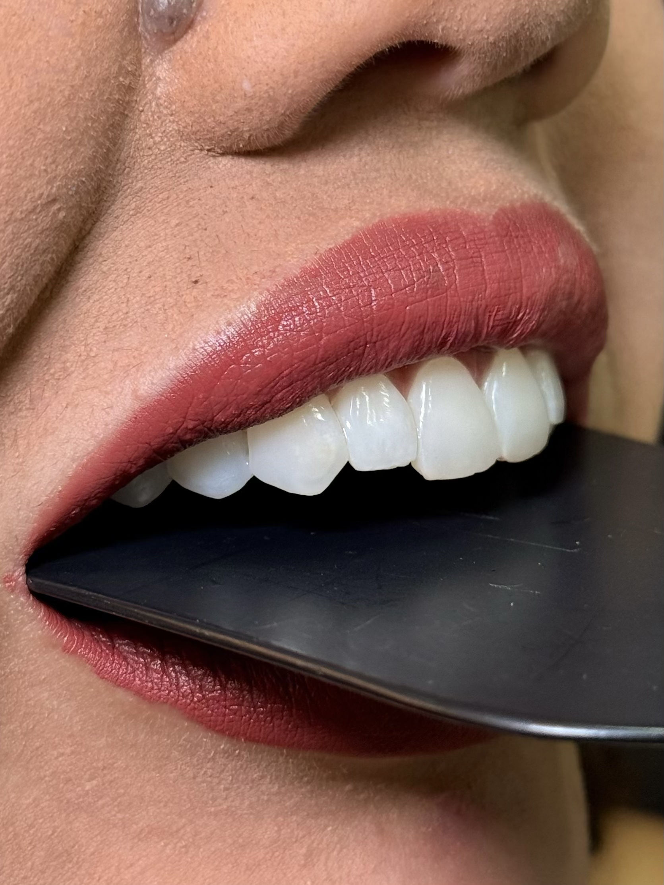
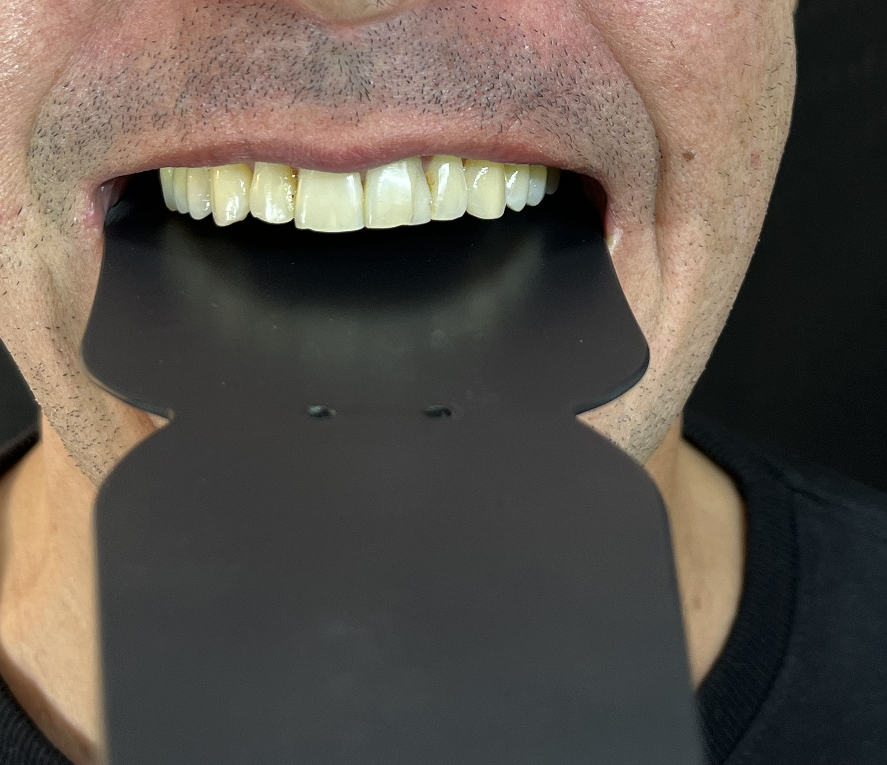
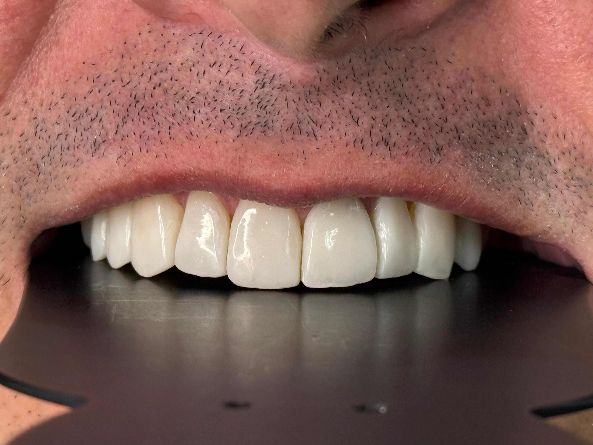
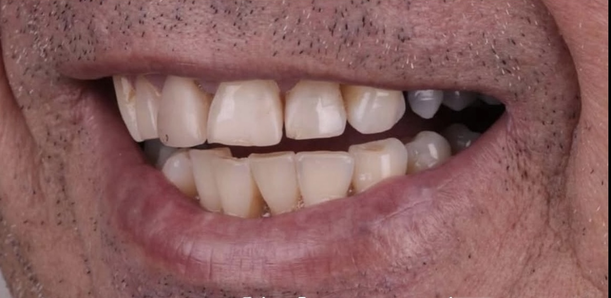
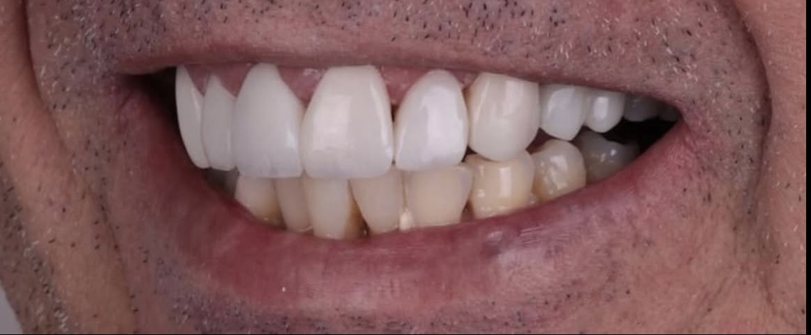

Leve desalinhamento
10 facetas em resina composta para corrigir um leve desalinhamento e elevar a autoestima da paciente.
CASO 01 · RESINA
Facetas em Resina Composta”
Sobre
Sou cirurgião-dentista com 3 anos de experiência na Saúde da Família e em consultório particular, dedicado a oferecer tratamentos que unem saúde, estética e naturalidade.
Minha maior paixão é a odontologia estética, especialmente as facetas em resina composta. Acredito que um sorriso bem planejado é capaz de transformar a autoestima e a qualidade de vida das pessoas.
Busco constante aperfeiçoamento profissional. Atualmente, curso pós-graduação em Ortodontia e possuo capacitações em Facetas em Resina Composta, Acabamento e Polimento Estético, Harmonização Orofacial e Endodontia Mecanizada.
Minha missão é transformar vidas através do sorriso, com um atendimento humanizado, excelência técnica e resultados naturais.
Trabalhos
Resultados reais de pacientes atendidos no consultório, com autorização de uso de imagem.


10 facetas em resina composta para corrigir um leve desalinhamento e elevar a autoestima da paciente.
CASO 01 · RESINA


9 facetas em resina composta para recuperar estrutura e anatomia do dente.
CASO 02 · RESINA


Menos exagero, mais equilíbrio. Um sorriso rejuvenescido sem perder sua essência.
CASO 03 · RESINA
Contato